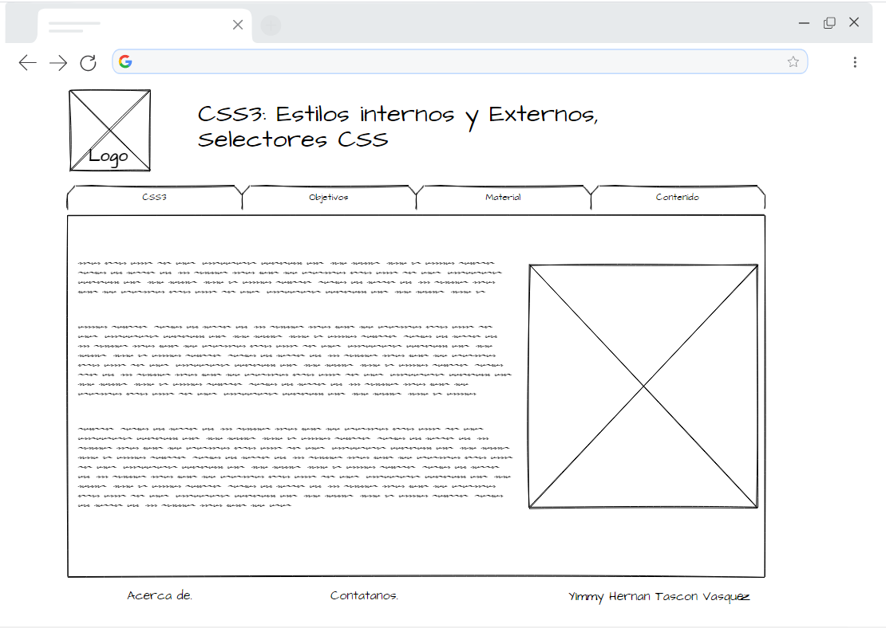

Planeación
Objetivo General
Conocer acerca de los estilos CSS3 y su uso en HTML5.
Objetivos específicos
- Conocer los estilos internos, Externos y Selectores CSS.
- Comprender el uso correcto de los estilos internos, Externos y Selectores CSS.
- Entender la construccion de la sintaxis para css.
Materiales
| Nombre | Enlace |
|---|---|
| CSS Básico | Mozilla Developer Network (2020). CSS Básico. Recuperado de MDN web docs: https://developer.mozilla.org/es/docs/Learn/Getting_started_with_the_web/CSS_basics. |
| Selectores CSS | Mozilla Developer Network (2020). CSS Selectors. Recuperado de MDN web docs: https://developer.mozilla.org/en-US/docs/Learn/CSS/Building_blocks/Selectors. |
| CSS interno, externo e inline | Mozilla Developer Network. (2020). How CSS is structured. Recuperado de MDN web docs: https://developer.mozilla.org/en-US/docs/Learn/CSS/First_steps/How_CSS_is_structured. |
Contenido
CSS son las siglas de Cascading style sheets, y hace referencia al lenguaje usado para describir la presentación y los estilos de un documento o archivo HTML. Establece propiedades como ancho, alto, color de fondo, tipo de letra, bordes, entre otros. CSS3 es la ultima evolución de CSS y básicamente añade nuevas funcionalidades disponibles a CSS2.
Una declaración de regla CSS esta compuesta por un selector, seguido por un conjunto de pares de valores propiedad:valor, los cuales definen las reglas CSS que se aplicarán a los elementos seleccionados por el selector, como se ve en la siguiente imagen:

Donde "Selector" es el selector, "color" es la propiedad y "red" es el valor de la propiedad. Todo esto conforman la declaración de unas reglas CSS.
Selectores CSS
CSS tiene varios tipos de selectores. A continuación se presentan tres selectores.
Selector de tipo clase
Es probablemente el selector más comúnmente usado. Selecciona todos los elementos que tienen un atributo class dado. Se define por medio de un punto (.) y luego el nombre de la clase.
Después, dentro de un par de llaves " { } " se establecen las reglas css del elemento.
.cuadro_rojo{
background-color:red;
width:200px;
height:200px;
}
Con esto definido, para seleccionar los elementos html a los que se les aplicará las reglas css definicas por la clase "cuadro_rojo", dentro del atributo class del elemento html escribimos el nombre de la clase css:
<div class="cuadro_rojo"></div>
Selector por ID
Aplica unas reglas definidas css al elemento que tenga el atributo id con el valor definido en el selector css. Este se define con el carácter '#'', como en el siguiente ejemplo:
#cuadro_rojo{
background-color:red;
width:200px;
height:200px;
}
Selector por Tipo de elemento
El selector por tipo de elemento html, es decir, por etiqueta html, selecciona los elementos en base al nombre del elemento como tal. Por ejemplo, en la siguiente imagen se define que todos los elementos <button> serán de color rojo y con un ancho y alto definido.
button {
background-color:red;
width:200px;
height:200px;
}
CSS internos
Hace referencia a los estilos definidos dentro de la etiqueta <style> en una página html. Por ejemplo en la siguiente imagen dentro de la etiqueta <style> se define una clase css donde se pinta un cuadro en rojo.
<style>
.cuadro_rojo{
background-color:red;
width:200px;
height:200px;
}
<style>
CSS externos
El css externo hace referencia a hojas de estilo que contienen reglas css y que están definidas en un archivo externo con formato .css. Por ejemplo, en un archivo llamado “cuadrorojo.css” se incluye el código
.cuadro_rojo{
background-color:red;
width:200px;
height:200px;
}
Y desde el archivo html se importa este archivo y sus reglas css de la siguiente forma:
<link rel="stylesheet" href="estilocuadrorojo.css">
De esta manera el código css queda almacenado en un archivo externo y hace que sea mas sencillo organizarlo.
El código anterior debe colocarse en la sección <head>
CSS en la línea (inline)
El css en la línea (llamado inline en inglés) son reglas css que se escriben como parte del atributo style de un elemento. En el codigo siguiente, las reglas css se definen en el atributo style del elemento div.
<div style="background-color: green; width:130px; display:flex"></div>
Como se puede ver, se establecen las propiedades css solo al elemento div.
Creación Mockup
